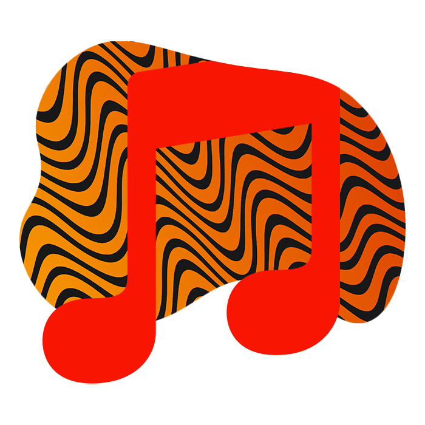

Budu to muset zPhotoshopovat...
Photoshop je můj primární nástroj pro tvorbu projektů, dokonce i tohoto! Také ho i užívám k úpravě fotek co fotím.
Lmao, xD.
Tento nástroj, mám ze všech nejradši. Adobe XD je jednoduchý, rychlý a intuitivní. Tvořím zde koncepty ať už čehokoliv, od webových stránek až po PDFka.

Hudba je nejlepší.
Pro mě je hudba nejkrásnější nástroj. Dodává mi energií při práci a dostanu se díky ní do správné nálady.